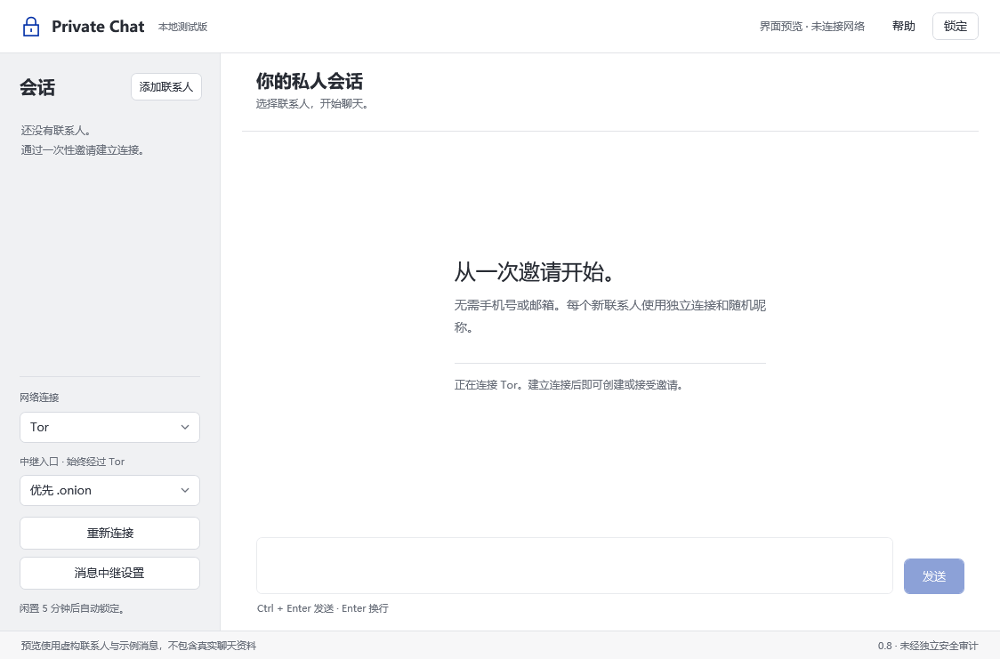

端到端加密
使用 SimpleX 聊天核心。通过可信渠道核验安全码后，再开始发送。
Windows 桌面应用 测试版 0.8.1
无需手机号或邮箱。通过一次性邀请，
建立属于你们的加密文字会话。
这是开发测试版，尚未经过独立安全审计。
建议先使用虚构消息测试。
使用 SimpleX 聊天核心。通过可信渠道核验安全码后，再开始发送。
支持预设或自定义消息中继。连接失败时，不会自动改为直连。
由你设置口令。闲置或锁定后结束连接，重新解锁后接收待收消息。
简洁的桌面界面，适合阅读的会话宽度。

浏览器负责下载，聊天在桌面应用中进行。
点击上方下载按钮，保存 PrivateChat-0.8.1-Windows-x64-Setup.exe。
退出已打开的 Private Chat，按向导安装。完成后从桌面快捷方式打开。
设置本地口令，等待 Tor 连接。一方生成邀请，另一方接受；双方核验安全码后即可发送文字。
当前支持一对一文字聊天、一次性邀请、安全码核验、历史消息翻页及自定义中继。附件、群聊、通话和多设备同步暂未提供。跨电脑、不同网络及长时间使用的验证仍在进行。
当前测试版尚未取得发布者代码签名。请确认下载链接来自本项目，并核对安装包的 SHA-256。不要关闭 Windows 安全防护；如果不能确认文件来源，请停止安装。
安装程序只更新程序文件，卸载保留 %LOCALAPPDATA%\PrivateChatDesktop 中的本地资料库。当前没有备份恢复界面，请不要删除资料库。遗忘口令无法找回。
启动后需要建立 Tor 通道，连接时间受网络影响。可以在应用中选择网桥，或切换为“公共域名（经 Tor）”入口后重连。后者依然经过 Tor；通道建立并不代表消息已经送达。
不能。加密无法保护已被控制的设备，也无法阻止对方保存消息或所有流量关联分析。本项目尚未完成独立安全审计，不应把测试通过理解为安全保证。
下载校验文件后，在 PowerShell 中执行下方命令，将输出与校验文件比较。SHA-256 用于核对文件完整性，不能替代发布者签名。
Get-FileHash .\PrivateChat-0.8.1-Windows-x64-Setup.exe -Algorithm SHA256本版本 SHA-256：7191a3e64339734534ded7caa493dd3257977c9801707baacf7124b7cfa30705